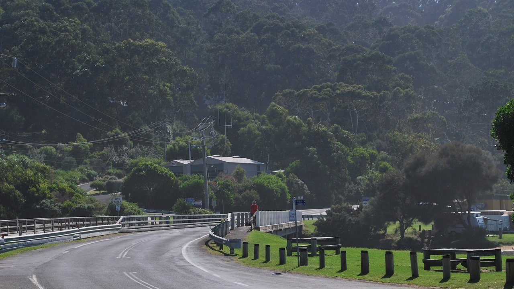

Race, Great Ocean Road

Behind
Best +0:01
371W
Target 418 W-47 W
- Cadence
- 87rpm
- Heart
- 140bpm
- Speed
- 26.5km/h
Work3 of 14
0:54
Next: · 1:00 at level 11
-1.8%
23 m climbed
1.67 km
16
Resistance / 32
Solo races your best-time ghost: position reads Ahead or Behind, and solo alone gets a Pause button. Frozen at 4:06.